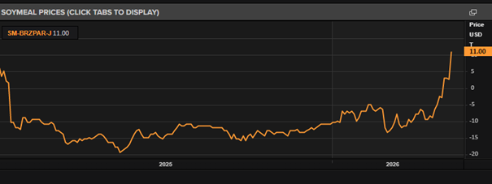
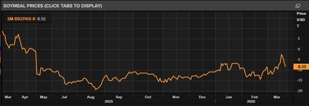
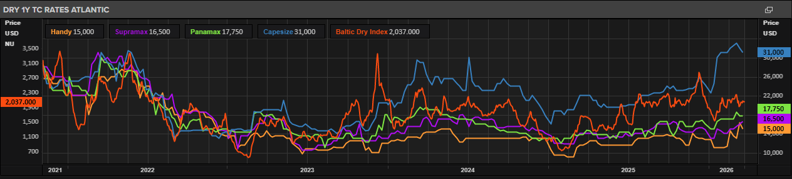
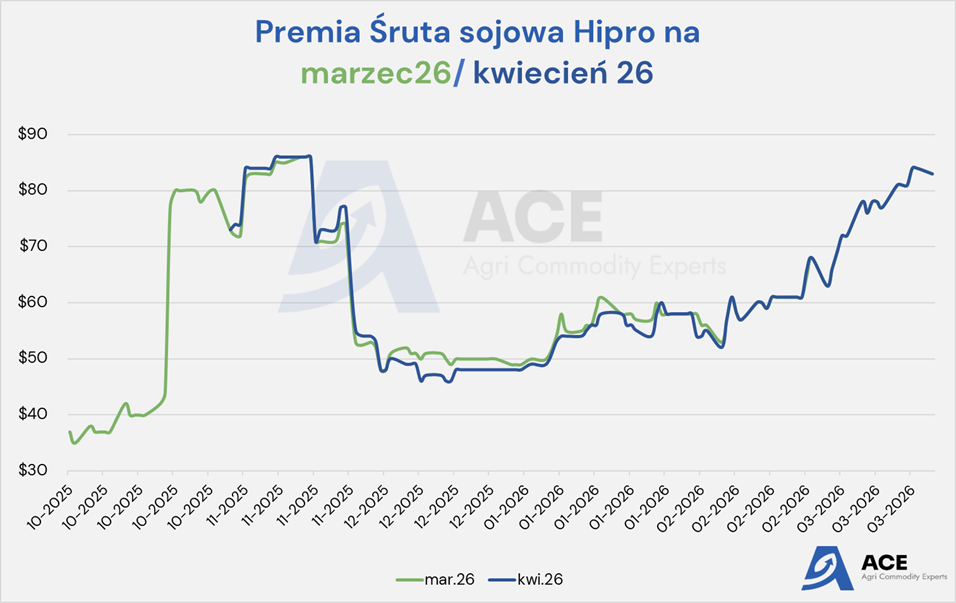
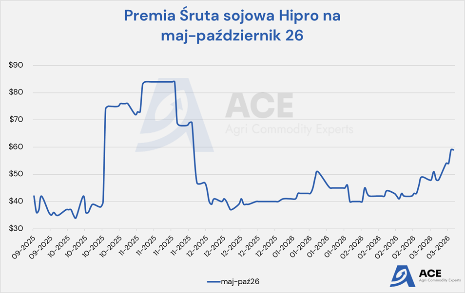
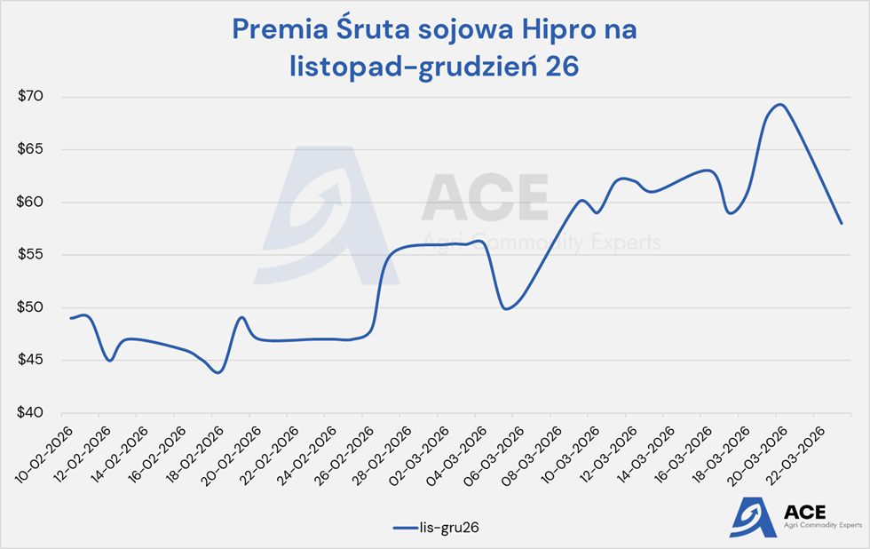
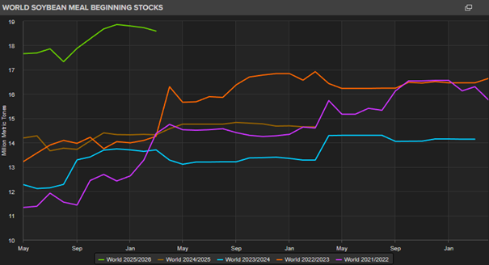
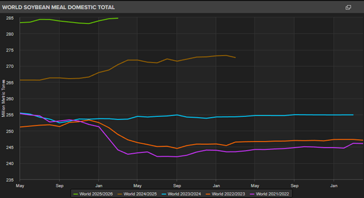

Śruta sojowa na rynku globalnym i krajowym- ujęcie własne ACE
ANALIZA TECHNICZNA ŚRUTA SOJOWA CBOT
Zacznijmy od spojrzenia na CBOT – poniżej wykres na wczorajsze zamknięcie (23.03.2026). W piątek mieliśmy dojście intraday do poziomu 335+, lecz my myśleliśmy że będziemy testowali szczyty z grudnia na poziomie 340. Tym razem zawrót nastąpił lekko szybciej.
Mamy dwie czerwone świeczki – które są jednak zbyt „delikatne” w swoich korpusach aby jednoznacznie mówić o możliwej formacji spadkowej. Zobaczymy co dziś się wydarzy. Technicznie jest od połowy lutego dość silny trend wzrostowy i można to czytać, że przy obecnym dolnym jego ograniczeniu na krótki czas jest to uzasadniony moment na jakiś zakup (my wczoraj zrobiliśmy zatem tylko resztkę marca) w okolicach CBOT 327,5. Obserwujemy, gdyż fundamentalnie uważamy, że long-term jest mimo wszystko pro-spadkowy.
Zacznijmy od spojrzenia na CBOT – poniżej wykres na wczorajsze zamknięcie (23.03.2026). W piątek mieliśmy dojście intraday do poziomu 335+, lecz my myśleliśmy że będziemy testowali szczyty z grudnia na poziomie 340. Tym razem zawrót nastąpił lekko szybciej.
Mamy dwie czerwone świeczki – które są jednak zbyt „delikatne” w swoich korpusach aby jednoznacznie mówić o możliwej formacji spadkowej. Zobaczymy co dziś się wydarzy. Technicznie jest od połowy lutego dość silny trend wzrostowy i można to czytać, że przy obecnym dolnym jego ograniczeniu na krótki czas jest to uzasadniony moment na jakiś zakup (my wczoraj zrobiliśmy zatem tylko resztkę marca) w okolicach CBOT 327,5. Obserwujemy, gdyż fundamentalnie uważamy, że long-term jest mimo wszystko pro-spadkowy.

No ale z dużą dozą humoru musimy pokazać poniższego mema – czujemy się dziś „totalnie pokonani” i stety/niestety musimy przyznać panu z mema rację…. Czyli to na tyle…


FUNDUSZE SPEKULACYJNE
W okresach napięć geopolitycznych, takich jak obecnie, tzw. „smart money” (czyli fundusze) zazwyczaj działają jako pierwsi. Nie inaczej jest teraz na rynku śruty sojowej. Po prawej mamy dwa wykresy – ten słupkowy czytamy od prawej czyli w tygodniach od 1 do 7 wstecz spekulanci kupowali kolejno śrutę sojową. Zobaczmy na analogię do listopadowo/grudniowych szczytów na poziomach 340. Wtedy także fundusze spowodowały cały rajd na podstawie shutdown w USA. Historia nie musi się powtórzyć, ale tak mocna akumulacja, która spowodowała że pozycja netto (wykres powierzchniowy) jest już wyższa niż była wtedy w grudniu – jest to wręcz idealny moment dla spekulantów aby „zcashowali” swój zysk w postaci około 40 USD (start rajdu od poziomów około 295 do 335). Jeśli to się zacznie – a zapalnikiem może być jeden wpis Donalda to możemy mieć powtórkę z grudniowo/styczniowej korekty w dół. Fundamenty są ku temu jak najbardziej odpowiednie. Dla nas to argument, aby w przód nie kupować dziś giełdy.
W okresach napięć geopolitycznych, takich jak obecnie, tzw. „smart money” (czyli fundusze) zazwyczaj działają jako pierwsi. Nie inaczej jest teraz na rynku śruty sojowej. Po prawej mamy dwa wykresy – ten słupkowy czytamy od prawej czyli w tygodniach od 1 do 7 wstecz spekulanci kupowali kolejno śrutę sojową. Zobaczmy na analogię do listopadowo/grudniowych szczytów na poziomach 340. Wtedy także fundusze spowodowały cały rajd na podstawie shutdown w USA. Historia nie musi się powtórzyć, ale tak mocna akumulacja, która spowodowała że pozycja netto (wykres powierzchniowy) jest już wyższa niż była wtedy w grudniu – jest to wręcz idealny moment dla spekulantów aby „zcashowali” swój zysk w postaci około 40 USD (start rajdu od poziomów około 295 do 335). Jeśli to się zacznie – a zapalnikiem może być jeden wpis Donalda to możemy mieć powtórkę z grudniowo/styczniowej korekty w dół. Fundamenty są ku temu jak najbardziej odpowiednie. Dla nas to argument, aby w przód nie kupować dziś giełdy.
PREMIA I ANALIZA FRACHTU
a) Premia na śrutę sojową Paranagua – Brazylia na marzec/kwiecień (spot). Widać od początku konfliktu w Iranie faktycznie dynamiczne wzrosty od około -10 do +11 czyli ~ 20 USD.
a) Premia na śrutę sojową Paranagua – Brazylia na marzec/kwiecień (spot). Widać od początku konfliktu w Iranie faktycznie dynamiczne wzrosty od około -10 do +11 czyli ~ 20 USD.

Źródło: LSEG Workspace
b) Premia na śrutę sojową Paranagua – Brazylia na maj. Tutaj początkowy wyskok wynosił bliżej 10 USD (a nie 20 jak w przypadku spot), z czego połowa została już zniwelowana i obecnie na ten miesiąc różnica vs koniec lutego wynosi +5 USD.
A dalsze premie wykazują jeszcze niższe zmiany.
A dalsze premie wykazują jeszcze niższe zmiany.

Źródło: LSEG Workspace
c) Ceny frachtu za tonę z Ameryki Południowej (River Plate - Argentyna) do Rotterdamu – śruta sojowa i ziarno soi. Historia cen spot oraz aktualne poziomy.
Jak widać na poniższym wykresie od początku marca ceny te wzrosły relatywnie niewiele – o około 3 do 4 USD za tonę.
Jak widać na poniższym wykresie od początku marca ceny te wzrosły relatywnie niewiele – o około 3 do 4 USD za tonę.

Źródło: LSEG Workspace
d) Szacowane kontrakty na za rok – nas interesuje w kontekście śruty sojowej linia zielona (Panamax). Obecnie średnia cena na trasach atlantyckich na za rok wynosi 17 USD/tony (ale to z różnych tras, więc nie patrzmy na cenę a na zmianę)
Ten wykres jest długoterminowy pokazuje ostatnie 5 lat. Od wybuchu wojny w Iranie jest tak naprawdę ostatni „kwadracik” na wykresie. Jak widać, wyraźny wzrost jest na najmniejszych statkach – tz Capesize. Na pozostałych wzrost jest niemal niezauważalny, nieodbiegający od wieloletniej normy.
Można to porównać z krzywą terminową notowań na ropę. Ropa rośnie drastycznie na spot, a każdy kolejny kontrakt jest tańszy. A więc tutaj „paniki” nie widać – a wręcz ten wykres pokazuje, że oczekiwania są na uspokojenie rynku. Pro spadkowo dla premii.
Ten wykres jest długoterminowy pokazuje ostatnie 5 lat. Od wybuchu wojny w Iranie jest tak naprawdę ostatni „kwadracik” na wykresie. Jak widać, wyraźny wzrost jest na najmniejszych statkach – tz Capesize. Na pozostałych wzrost jest niemal niezauważalny, nieodbiegający od wieloletniej normy.
Można to porównać z krzywą terminową notowań na ropę. Ropa rośnie drastycznie na spot, a każdy kolejny kontrakt jest tańszy. A więc tutaj „paniki” nie widać – a wręcz ten wykres pokazuje, że oczekiwania są na uspokojenie rynku. Pro spadkowo dla premii.

Źródło: LSEG Workspace
e) Premie w Polsce:



Wniosek: Jeśli zatem dodamy wzrost premii spot na rynkach bazowych o około +20 USD oraz fracht (z nawiązką przyjmijmy +5 USD/t) to mamy łącznie +25 USD do tony. U nas natomiast mamy na wczoraj tj 23.03 premie na hipro 83 vs 61 z 24.02. A więc 22 USD różnicy. Można powiedzieć, że jest to fair u importerów.
Naszym zdaniem, jeśli oni podwyższają realnie o tyle ile pokazują nam niezależne wykresy – może to oznaczać, że mają mimo wszystko dużo towaru (choć z rozmów wynika że opóźnienia hipro będą przez wolniejsze statki).
Najważniejszy jednak nasz wniosek, że poza kwietniem czyli od maja w górę – wzrost w Polsce jest z 43 (koniec lutego) na 59 obecnie czyli 16 USD. A nasze wykresy pokazują, że rynki bazowe już korygują premie na przyszłość. Nas to utwierdza aby poczekać i nie robić ruchów w przód.

Źródło: LSEG Workspace
FUNDAMENTY – ŚRUTA SOJOWA (NIE ZIARNO SOI)
a) Śruta sojowa – produkcja światowa. Obecnie świat produkuje najwięcej śruty sojowej w historii – poniższy wykres to tylko ostatnie 5 lat, ale wcześniej było to dużo dużo mniej. Jak widać, nie ma póki co żadnego trendu spadkowego – a więc śruty jest.

Źródło: LSEG Workspace
b) Zapasy początkowe śruty sojowej na świecie.
Również największe w historii. To już pozostawiamy bez zbędnego komentarza.
Również największe w historii. To już pozostawiamy bez zbędnego komentarza.

Źródło: LSEG Workspace
c) Światowa konsumpcja śruty sojowej – także rekordowa
Jednak jak przyjrzymy się konkretnie cyfrom to większe zapasy i produkcja są niemal idealnie o tyle ile wynosi większa produkcja. Czyli podsumowując ani nie brakuje ani nie ma dużych nadwyżek (choć są lekko większe niż przed rokiem)
A więc fundamentalnie najwięcej mówi się o soi (której też jest w „brud”), jednak w przypadku śruty sojowej nie ma wielkich zmian, w skrócie bilans jest komfortowy. Co ciekawe największe zwiększenie użytku wewnętrznego śruty sojowej notuje się w USA.
Jednak jak przyjrzymy się konkretnie cyfrom to większe zapasy i produkcja są niemal idealnie o tyle ile wynosi większa produkcja. Czyli podsumowując ani nie brakuje ani nie ma dużych nadwyżek (choć są lekko większe niż przed rokiem)
A więc fundamentalnie najwięcej mówi się o soi (której też jest w „brud”), jednak w przypadku śruty sojowej nie ma wielkich zmian, w skrócie bilans jest komfortowy. Co ciekawe największe zwiększenie użytku wewnętrznego śruty sojowej notuje się w USA.